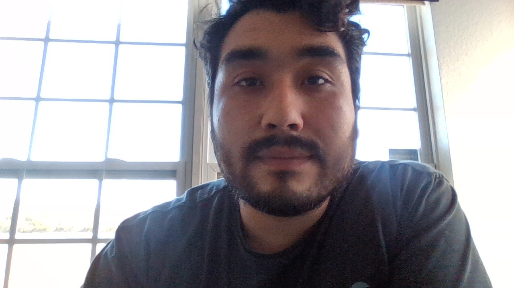

About me
My name is Anthony Colindres. I am 24 years old, my birthday is January 12th, 1995. I have many interest, my primary ones being outdoors or indoors. I used to live in Colorado where I would spend most of my free time hiking through the mountains with my dogs, Phoebe and Lewis. Since moving back to Florida, you can usually find me at the beach or on the river paddle boarding.
When I'm not outside, I'm usually playing Xbox or Nintendo. The game genres I play vary from FPS (first person shooter), to RPG (role playing games) and recently I've gotten into fighting games as well. If I'm not playing video games or hiking I still try my best to stay active. In between hiking and video games i enjoy playing soccer and training Jiu Jitsu.
My background is Latino and my parents come from Central America, Guatemala to be exact! I am very proud of my heritage and where I come from. When I graduated highscool I wanted to move to Guatemala but unfortunately that process turned out to be more difficult than expected.